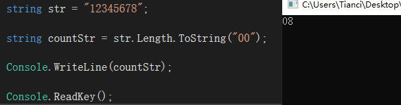
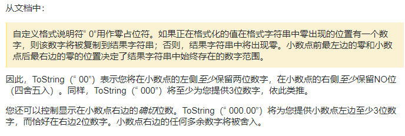
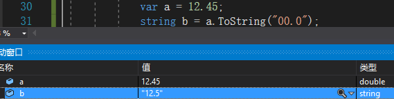

# 记录一下遇到过的面试题
# 先看一下第一题

# ToString 的方法摘要：使用指定的格式，将此实例的数值转换为它的等效字符串表示形式。
# 我理解的意思是：ToString 不跟参数，就直接转换为字符串，而跟参数，则根据参数的格式，把相应变量转换成指定格式
# 上题要求 Console.WriteLine 里面输出的是多少，通过答案我们大胆猜测一下，答案中的 8 为 str.Length 为 str 字符串的长度等于 8，而不是因为 str 的最后一位数是 8，“00" 为变换后的格式，格式为两位数，而 8 是个位数，所以答案为 08
# 然后我又看到了这样一段话

# 表达能力不好，意思大致是这样的：如果数值小数位数 (例如：12.45) 与格式（“00.0”）后的小数位数多一位，那么结果将会把最后一位给四舍五入掉，直接上代码看一下结果等于 12.5

# 第二题，打印出 2000-2500 之间所有的闰年年份，必须满足两个条件：1：年份必须为 4 的倍数，2：年份如果为 100 的倍数，必须同为 400 的倍数
for (int a = 2000; a <= 2500; a++) | |
{ | |
// 年份为 4 的倍数，年份如果为 100 的倍数必须同为 400 的倍数 | |
if ((a % 4 == 0) || (a % 400 == 0 && a % 100 == 0)) | |
{ | |
Console.WriteLine(a); | |
} | |
} |
# 第三题，打印出 1+2!+3!+…+20! 的和，说白了就是 1-20 的阶乘之和
# 第一种方法
static void Main(string[] args) | |
{ | |
int sum = 0; | |
for (int i = 1; i <= 20; i++) | |
{ | |
sum += jieCheng(i); | |
} | |
Console.WriteLine(sum); | |
Console.ReadKey(); | |
} | |
public static int jieCheng(int n) | |
{ | |
if (n == 1) | |
{ | |
return 1; | |
} | |
else | |
{ | |
return n * jieCheng(n - 1); | |
} | |
} |
# 第二种方法
int sum = 0; | |
int n = 20; | |
for (int i = 1; i <= n; i++) | |
{ | |
int temp = 1; | |
for (int j = 1; j <= i; j++) | |
{ | |
temp *= j; | |
} | |
sum += temp; | |
} | |
Console.WriteLine(sum); | |
Console.ReadKey(); |
# 最后一题，写出一个方法，参数是三个整数（x,y,z），按从小到大排序
public static void PaiXu(int x, int y, int z) | |
{ | |
int[] num = new int[3]; | |
num[0] = x; | |
num[1] = y; | |
num[2] = z; | |
Array.Sort(num); | |
Console.WriteLine("从小到大结果依次为："); | |
for (int i = 0; i < num.Length; i++) | |
{ | |
Console.WriteLine(num[i]); | |
} | |
} |
# 如果题目要求从用户输入的三个整数来进行排序的话，可以这样写
int[] num = new int[3]; | |
Console.WriteLine("请输入三个整数"); | |
for (int i = 0; i < num.Length; i++) | |
{ | |
Console.WriteLine("请输入第{0}个数字", i + 1); | |
num[i] = Convert.ToInt32(Console.ReadLine()); | |
} | |
// 从小到大排序 | |
Array.Sort(num); | |
Console.WriteLine("数字从小到大依次为："); | |
for (int i = 0; i < num.Length; i++) | |
{ | |
Console.WriteLine(num[i]); | |
} | |
Console.ReadKey(); |